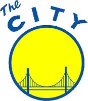

×
Let's Talk!
E-mail me at
me@alexameyer.com
Tweet me at
@alexandrakmeyer
Toggle navigation
City of San Francisco
About
Photos
Startups
Map
Get in Touch
The Mission
View
USA: California: San Francisco
in a larger map